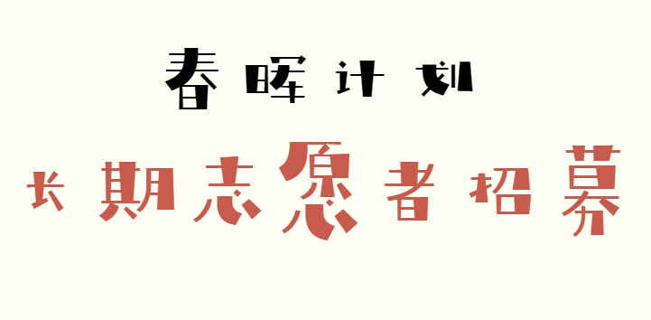
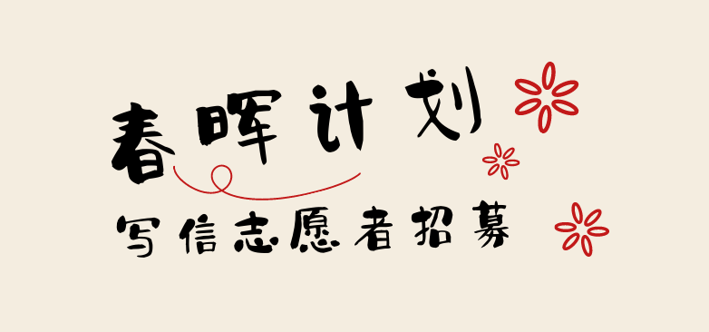
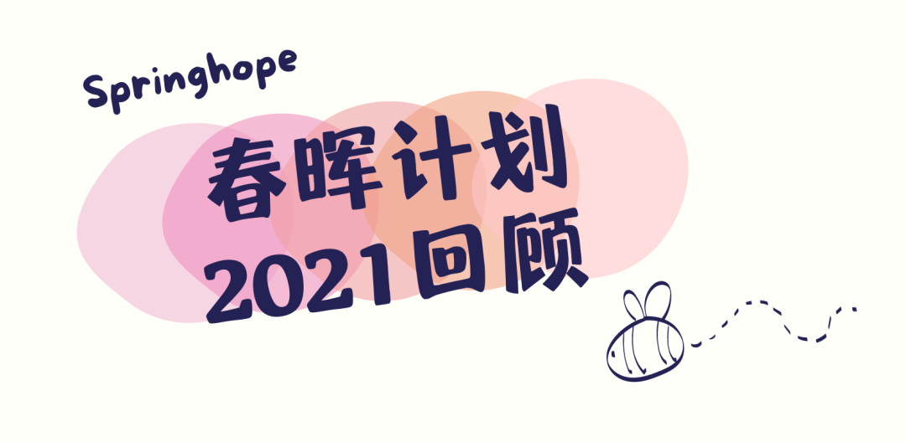
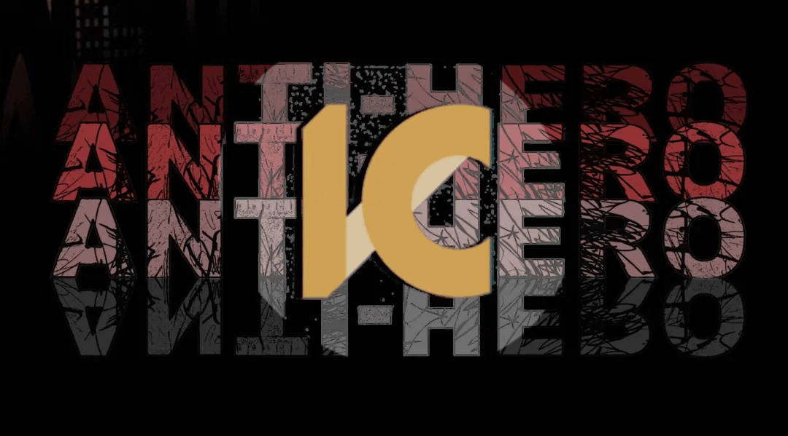
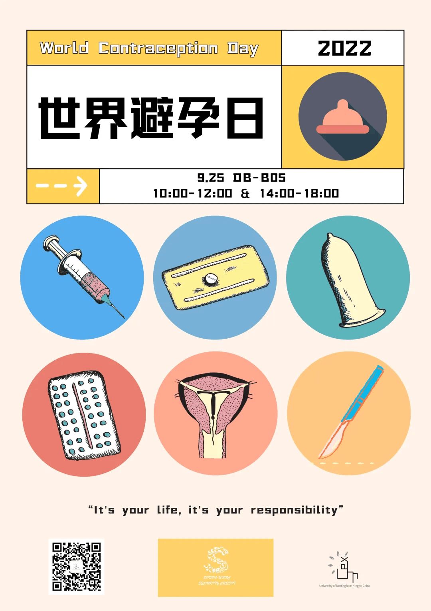
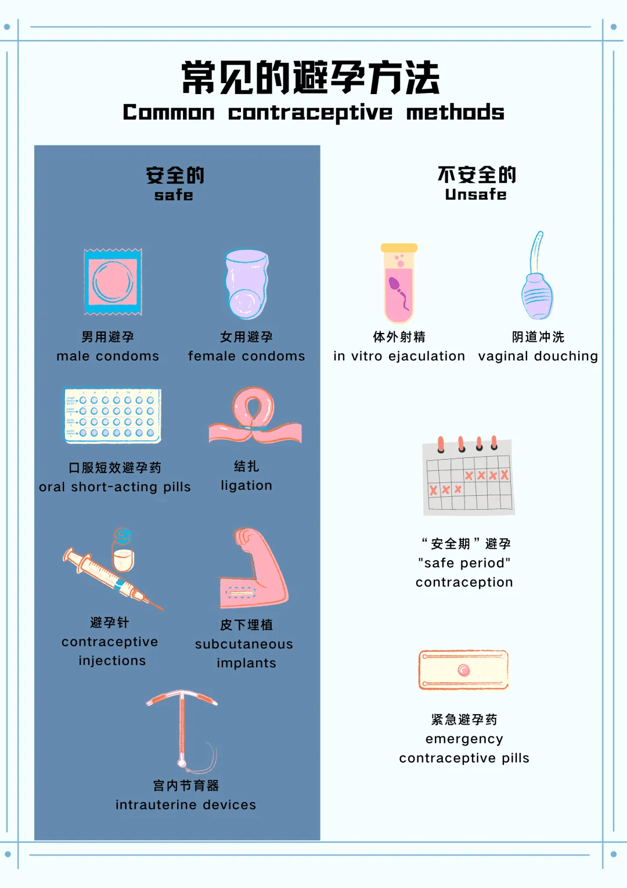
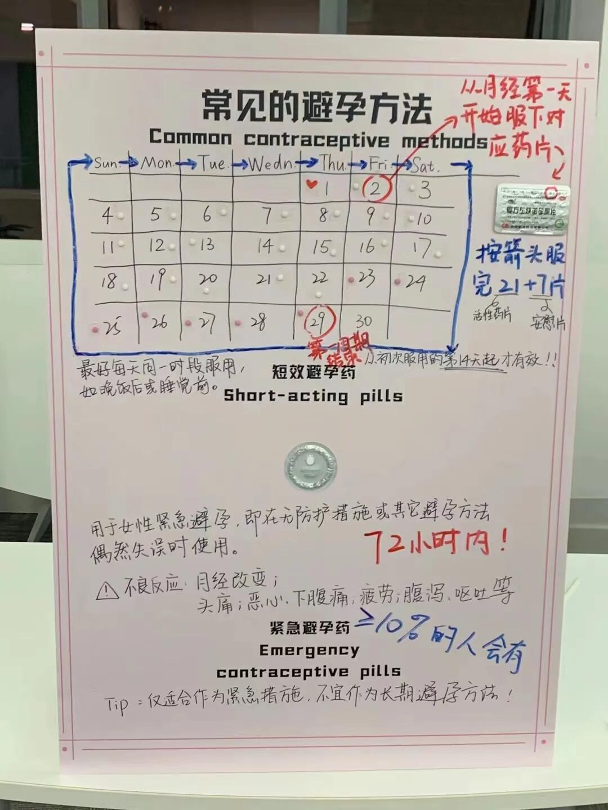
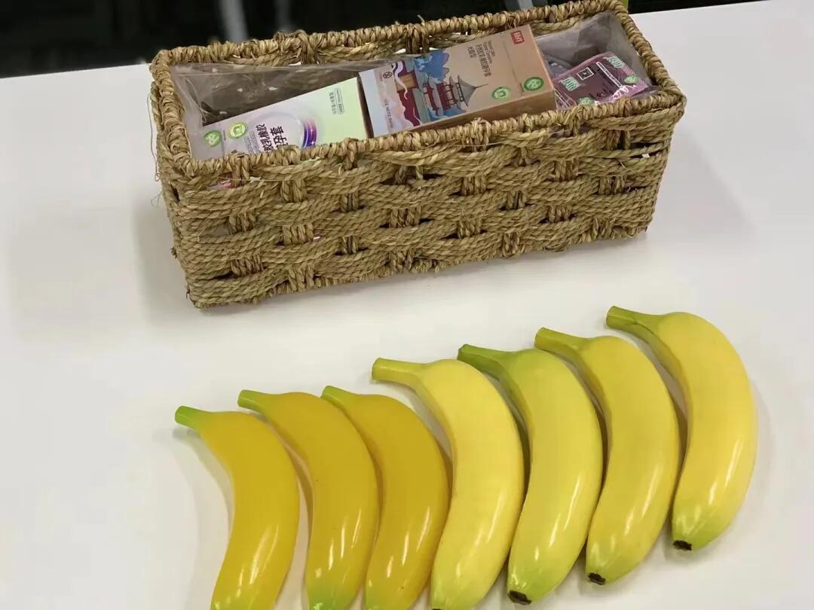
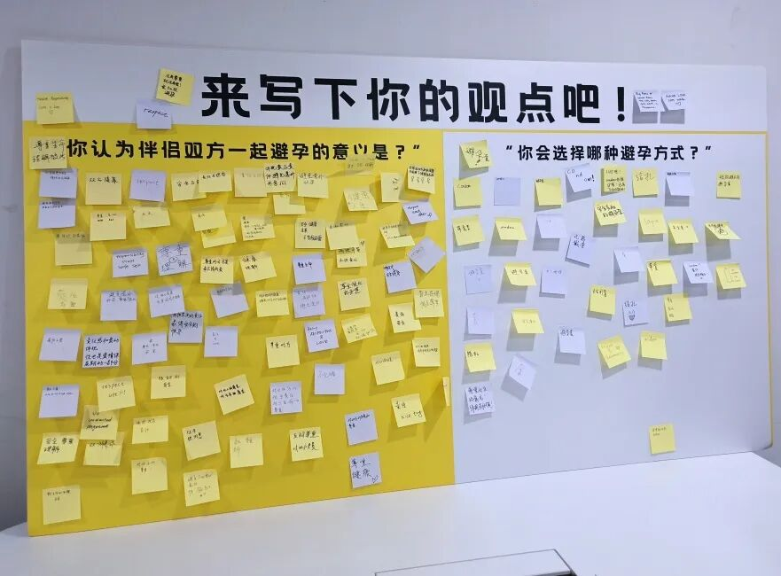
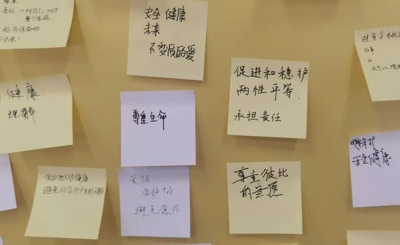

HE JIAYU — SELECTED PORTFOLIO
Portfolio · Marketing / Communication / Education
您好！我是何家语。
营销 / 传播 / 教育 · 杭州
伦敦大学学院教育学硕士研究生，宁波诺丁汉大学国际传播学本科。拥有市场营销、媒体制作、宣传与教育项目经验，擅长市场分析、用户洞察、内容选题与跨媒体内容制作。
About / Experience / Skills
关于我
教育与实习经历
2025.09—2027.01（预计）伦敦大学学院 UCL教育学硕士
2024.06—2024.09舟山市影视艺术家协会新媒体运营实习生参与城市形象宣传、人物采访及新媒体视频内容的策划、制作与传播。参与1部城市宣传片及5+条短视频和幕后花絮的内容策划，独立对接8名采访对象，完成前期资料搜集、采访策划及8份采访提纲。使用Premiere Pro、剪映及After Effects进行素材筛选、视频剪辑、字幕与片头包装。
2023.06—2023.09浙江绿城元和房地产开发有限公司销售部实习生实习期间，围绕房地产项目的市场分析、营销传播与客户转化开展工作。持续跟踪5个竞品项目，通过实地踩盘、电话调研及公开渠道收集市场信息，结合来访、成交及渠道数据，使用Excel整理市场周报，为定价与营销策略调整提供参考。参与3个营销推广节点的内容策划，完成3段微信公众号推广文案及10条朋友圈推广内容，带来10+次微信咨询；同时参与3场案场节日营销活动，负责物料筹备、场地布置与现场协调，累计接待100+人次。活动结束后完成2份营销复盘报告，分析客户画像、渠道来源及反馈，提出传播与客户触达优化建议，并应用于后续活动。
2021.09—2025.06宁波诺丁汉大学国际传播学本科 · 2:1 荣誉学位
工具与技能
内容与设计工具
数据与 AI 工具
专业能力
市场调研用户画像内容策划公众号排版活动策划采访采编跨媒体传播
Selected Writing
文案写作
01 / 绿城安吉桃花源 · 安桃山居志
参与第 8–10 期微信公众号【安桃山居志】内容制作，负责文案、素材整理及图文排版。
第 8 期 · 耕山且悠然阅读量 359 · 点赞 / 在看 12
阅读原文 ↗ 第 9 期 · 山滴岚光水拍堤阅读量 428 · 点赞 / 在看 2
阅读原文 ↗ 第 10 期 · 小溪泛尽却山行阅读量 476 · 点赞 / 在看 8
阅读原文 ↗ 02 / SpringHope 春晖计划

长期志愿者招募
以童年回忆与成长为切入点，结合支教项目介绍、招募条件及参与流程进行宣传。
项目组联合出品 · 具体个人分工待补充
阅读量 1007 · 点赞 / 在看 18
阅读原文 ↗
执笔舞春 纤纸载情
围绕书信往来与情感连接展开活动宣传，介绍参与对象、活动时间、流程与报名方式。
项目组联合出品 · 具体个人分工待补充
阅读量 530 · 点赞 / 在看 8
阅读原文 ↗
Spring Hope 春晖计划｜2021 回顾
以年度时间线、支教课堂与书信活动为主线，回顾项目的年度行动与志愿者经历，结合反馈呈现公益项目的持续实践。
2022.01.24 发布 · 项目组联合出品
阅读量 594 · 点赞 / 在看 25
阅读原文 ↗03 / ICV MKT · 文化评论

反英雄：权威符号体系中的异化者
从文学与影视中的反英雄形象出发，讨论人物类型、文化语境与权威叙事，展示长篇专题内容的资料组织和文字表达。
阅读量 486 · 点赞 / 在看 8
阅读原文 ↗EVENT PLANNING / UNNCEX · 2022
无数套可能
世界避孕日 · 大学生性教育第一关

01 / 项目目标
我们需要实现什么？
面向在校大学生，以世界避孕日为传播节点，降低性健康话题的参与门槛，普及避孕知识与正确使用方法，并通过互动体验促进自主思考。
我们面对哪些问题？
传统科普容易停留在单向讲解，性话题也容易因羞耻感和认知误区而被回避。展览需要同时解决「如何吸引参与」「如何讲清知识」「如何促进互动」三个问题。
我们应当如何解决？
我们将展览的整体思路确定为：以艺术装置吸引注意，以互动体验降低参与门槛，以科学科普传递知识，以实践操作巩固理解。
为了实现效果，我们做了什么？
02 / 策划逻辑
从吸引到表达的四步体验
01 视觉吸引悬挂式彩色装置，让避孕用品成为可公开讨论的展览媒介。
02 知识理解双语展板与科普影片，解释常见避孕方法和误区。
03 实际参与模拟佩戴与知识问答，将抽象知识转化为体验。
04 观点表达便利贴留言墙收集对避孕责任、选择和性健康的看法。
策划主线：目标与受众 → 参与障碍 → 视觉入口 → 知识传达 → 互动练习 → 观点反馈 → 传播回顾。
03 / 现场设计与实物
从方案到展区
 艺术装置用彩色液体与悬挂结构形成空间视觉焦点，吸引观众进入展览。
艺术装置用彩色液体与悬挂结构形成空间视觉焦点，吸引观众进入展览。
知识展示双语图文比较不同避孕方式，降低信息理解门槛。
科普细化通过周期示意与文字说明，区分常规避孕和紧急避孕。
互动体验利用模型和演示用品组织操作练习，并由志愿者进行引导。
参与反馈设置开放式问题，鼓励学生写下对避孕选择和责任的理解。
反馈记录保存参与者观点，作为后续教育内容优化的定性参考。04 / 执行安排
传播与人员安排
传播采用「公众号预热—线下展览—公众号回顾」路径，活动前介绍展览主题与互动方式，活动后以现场照片和体验记录延续传播。
人员分工 · 10 人协作模型
| 岗位 | 人数 | 职责 |
|---|
| 统筹协调 | 1 | 场地与节点 |
| 内容与视觉 | 2 | 科普和宣传 |
| 物料布展 | 2 | 安装与撤场 |
| 互动引导 | 3 | 讲解与问答 |
| 记录与后勤 | 2 | 签到、摄影和反馈 |
05 / 成果
项目交付与传播成效
200+单场覆盖学生
300+宣传资料发放
10 人现场志愿者协调
8 套展板及宣传物料
2 场世界避孕日展会
500+项目累计覆盖学生
06 / 项目复盘
从触达到有效学习
活动将单向知识宣传拆解为视觉吸引、知识理解、操作练习和观点表达四个环节，使参与者能够通过不同方式接触同一议题。10 人志愿者协作支持多个展区同步运行，主题展板、教学材料与公众号内容也可用于后续同伴教育。